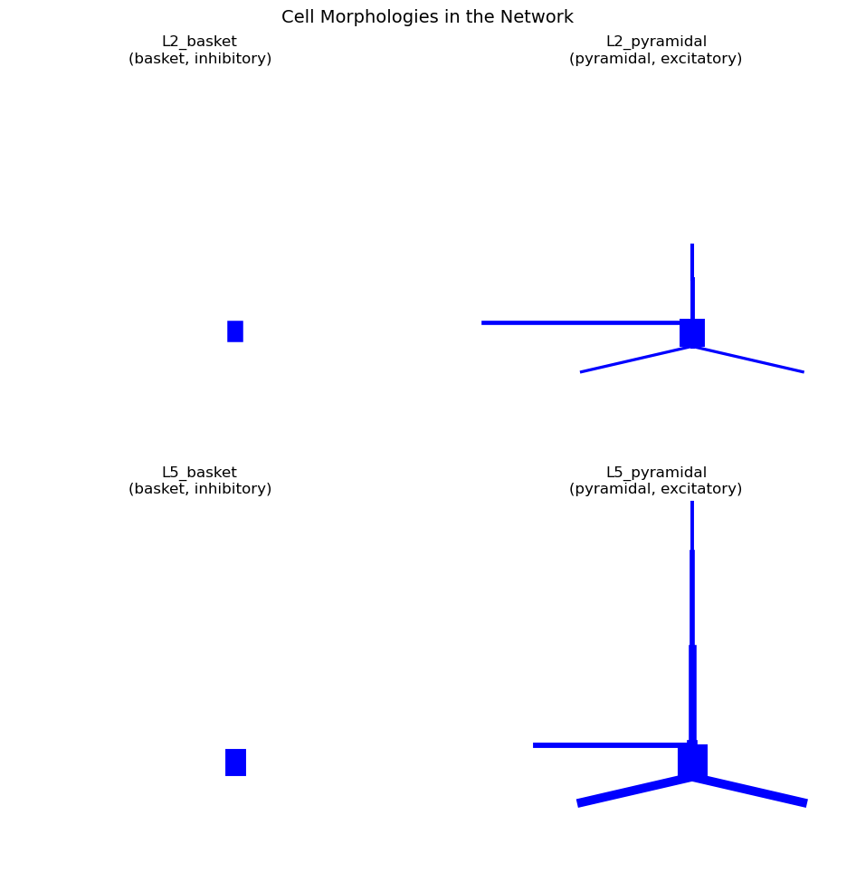

Initializing the Network
First, we instantiate the standard Jones 2009 model. This model serves as the baseline for our exploration.
net = jones_2009_model()
print(f"Network created with {len(net.cell_types)} cell types")
print(f"Cell types: {list(net.cell_types.keys())}")
type(net.cell_types) # cell types are returned as a dictionary now for us to see
net.cell_types # each cell type is a dictionary containing the cell object and cell metadata
# The cell metadata contains information on morphology, cell type (inhibitory/excitatory), layer, and whether the cell contributes to the dipole
for cell_type_name, cell_type_data in net.cell_types.items():
print(f"\n{cell_type_name}:")
metadata = cell_type_data["cell_metadata"]
for key, value in metadata.items():
print(f" {key}: {value}")
# The cell object contains the properties of the cell, such as its sections, synapses, and ion channels (see below for an example)
# the properties of each section can be accessed as follows:
cell_type = "L2_pyramidal"
for key, value in net.cell_types[cell_type]["cell_object"].sections.items():
print(f"\nSection: {key}")
print(f" Properties: {value}")
Querying Cell Types
The net.cell_types dictionary contains the metadata for
each cell type. We can filter and query this information to find
specific groups of cells based on their properties, such as layer,
ephys, or morphology.
excitatory = net.filter_cell_types(electro_type='excitatory')
print(f"Excitatory cells: {excitatory}")
layer2_cells = net.filter_cell_types(layer='2')
print(f"Layer 2 cells: {layer2_cells}")
dipole_contributors = net.filter_cell_types(measure_dipole=True)
print(f"Dipole contributors: {dipole_contributors}")
Inspecting Connection Weights
We can also use metadata to investigate the connectivity of the
network. The existing net.connectivity list stores
information about all connections, which we can inspect to understand
the default weights and delays.
src_example = 'L2_pyramidal'
target_example = 'L2_pyramidal'
print(f"Example: {src_example} \u2192 {target_example} proximal connections")
for conn in net.connectivity:
if (conn['src_type'] == src_example and
conn['target_type'] == target_example and
conn['loc'] == 'proximal'):
weight = conn['nc_dict']['A_weight']
gain = conn['nc_dict'].get('gain', 1.0)
print(f"Receptor: {conn['receptor']}")
print(f" Base weight: {weight:.6f} \u03bcS")
print(f" Gain factor: {gain}")
print(f" Effective weight: {weight * gain:.6f} \u03bcS")
print(f" Delay: {conn['nc_dict']['A_delay']} ms")
print(f" Space constant: {conn['nc_dict']['lamtha']}")
Identifying Dipole Contributors
The measure_dipole metadata field indicates whether a
cell type's activity is included in the dipole calculation. This is
something that would not be used in your Day to Day activity, but is
relevant if you want to know more about the model you are working
with!
#cells that contribute to the dipole
dipole_cells = net.filter_cell_types(measure_dipole=True)
non_dipole_cells = net.filter_cell_types(measure_dipole=False)
print("Cells contributing to dipole signal:")
for cell_type in dipole_cells:
print(f"{cell_type}")
print("\nCells NOT contributing to dipole signal:")
for cell_type in non_dipole_cells:
print(f"{cell_type}")
Visualizing Cell Morphologies
another usecase is that metadata can be used to organize and annotate visualizations
fig = plt.figure(figsize=(14, 10))
for idx, (cell_name, cell_data) in enumerate(net.cell_types.items()):
ax = fig.add_subplot(2, 2, idx + 1, projection='3d') # Create 3D subplot
cell_obj = cell_data["cell_object"]
cell_obj.plot_morphology(ax=ax, show=False)
#below we use annotations based on the metaData
ax.set_title(f'{cell_name}\n({cell_data["cell_metadata"]["morpho_type"]}, '
f'{cell_data["cell_metadata"]["electro_type"]})')
plt.suptitle('Cell Morphologies in the Network', fontsize=14, y=0.98)
plt.tight_layout()
plt.show()

Combining queries
combine multiple criteria to filter cell types. For example, we might want to find all excitatory cells in a specific layer.
# excitatory cells in layer 2
l2_excitatory = net.filter_cell_types(layer='2', electro_type='excitatory')
print(f"Layer 2 excitatory cells: {l2_excitatory}")
# properties of this filtered population
if l2_excitatory:
cell_type = l2_excitatory[0]
metadata = net.cell_types[cell_type]['cell_metadata']
cell_count = len(net.pos_dict[cell_type])
print(f"\nProperties of {cell_type}:")
print(f" Cell count: {cell_count}")
print(f" Morphology: {metadata['morpho_type']}")
print(f" Contributes to dipole: {metadata['measure_dipole']}")
Inspecting Ion Channel Conductances
Another usecase allowing you to access the conductance parameters of ion channels across different cell types
# metadata to find a pyramidal cell, then examine its conductances
pyramidal_cells = net.filter_cell_types(morpho_type='pyramidal')
example_pyramidal = pyramidal_cells[0]
print(f"Conductances in {example_pyramidal}:")
cell_obj = net.cell_types[example_pyramidal]['cell_object']
# soma conductances as an example
if 'soma' in cell_obj.sections:
soma_mechs = cell_obj.sections['soma'].mechs
print("\nSoma ion channels:")
for mech_name, mech_params in soma_mechs.items():
conductances = {k: v for k, v in mech_params.items()
if 'gbar' in k or 'gkbar' in k or 'gnabar' in k}
if conductances:
print(f" {mech_name}: {conductances}")
# same for the dendritic section
if 'apical_tuft' in cell_obj.sections:
tuft_mechs = cell_obj.sections['apical_tuft'].mechs
if tuft_mechs:
print("\nApical tuft ion channels:")
for mech_name, mech_params in tuft_mechs.items():
conductances = {k: v for k, v in mech_params.items() if 'gbar' in k}
if conductances:
print(f" {mech_name}: {conductances}")